Назад

Назад
Все эти три способа взаимодействия с пользователем вызывают появление модальных окон. Модальное означает то, что пользователь не может взаимодействовать с интерфейсом остальной части страницы, пока взаимодействует с данным окном
Синтаксис:
alert(message);
Данный код отобразит окно с сообщением message и кнопкой OK
Синтаксис:
result = prompt(title, [default]);
Здесь title - текст, отображаемый в окне, а default - необязательный параметр, устанавливающий начальный текст в поле ввода
Данный код отобразит окно с полем для ввода текста и кнопками OK и Отмена, а затем вернет текст, введенный пользователем, если он нажмет OK, либо null, если ввод будет отменен
Для IE лучше всегда устанавливать default, иначе IE установит значение "undefined"
Синтаксис:
result = confirm(question);
Данный код отобразит окно с текстом вопроса question и кнопками OK и Отмена, а затем вернет true, если нажата кнопка OK или false в остальных случаях